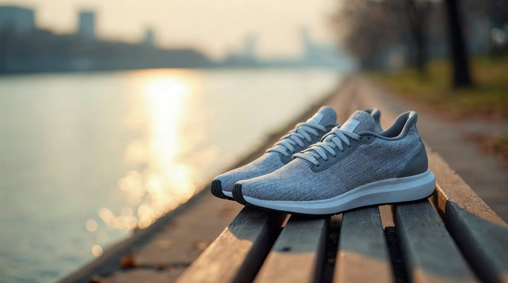
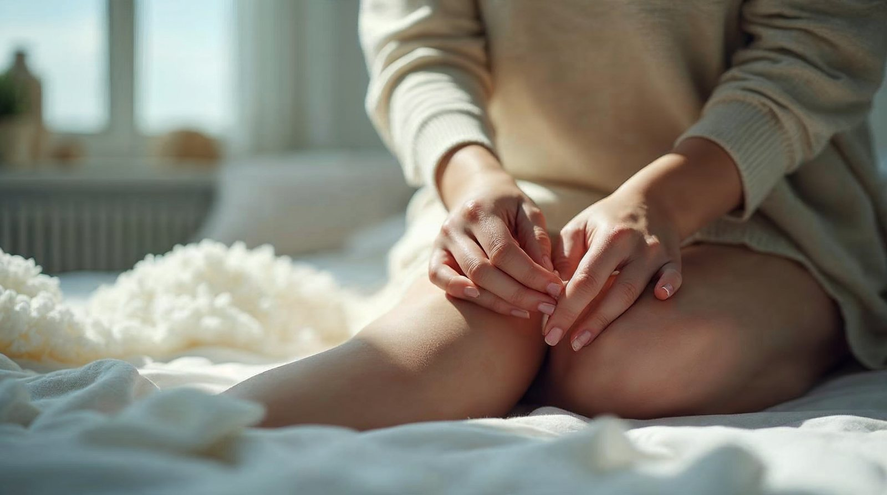
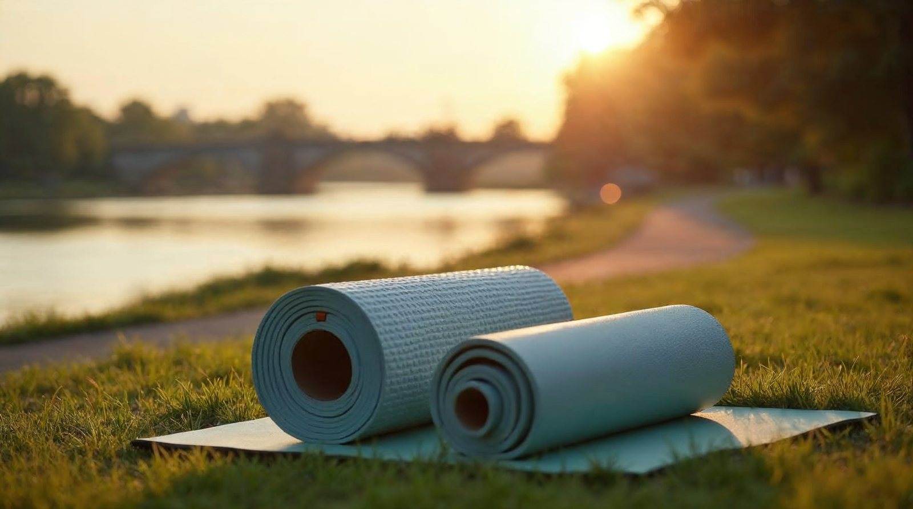
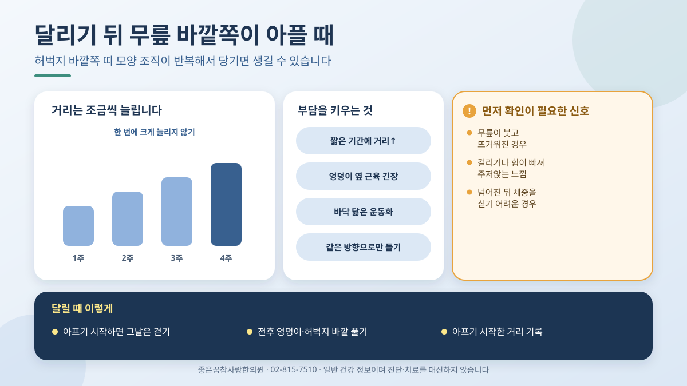

이종호 한의사 감수좋은꿈참사랑한의원 대표원장 (한의사 면허번호 19769)발행 2026-11-24 · 수정 2026-11-25
이 글의 차례
한강공원은 노량진과 흑석동에서 가까워 퇴근 뒤 달리러 나가는 분이 많습니다. 처음엔 괜찮다가 거리를 늘리자 몇 킬로미터쯤부터 무릎 바깥쪽이 찌릿하다는 분이 있습니다. 달리기를 멈추면 가라앉았다가 다음에 달리면 또 같은 자리가 아프다면, 거리보다 달리는 방식을 먼저 살펴볼 때입니다.
통증을 참고 거리를 채우기보다 그날은 걷기로 바꾸고, 언제 어느 구간에서 아픈지 기록해 오시면 상담에서 함께 살필 수 있습니다.
예를 들어 마라톤 대회를 앞두고 몇 주 사이에 주 2회 5km에서 주 4회 10km로 늘린 경우, 8km쯤부터 무릎 바깥쪽이 찌릿하다가 멈추면 가라앉는 일이 생길 수 있습니다. 이럴 때는 무릎만이 아니라 늘어난 거리와 횟수, 신발과 코스를 함께 살펴봐야 합니다.
왜 이런 불편이 생길 수 있나요
- 허벅지 바깥쪽을 따라 무릎까지 이어지는 띠 모양 조직이 반복해서 스치거나 당기면 무릎 바깥쪽이 아플 수 있습니다.
- 거리와 횟수를 짧은 기간에 크게 늘리면 몸이 적응할 시간이 부족해집니다.
- 엉덩이 옆 근육이 약하거나 긴장되어 있으면 달릴 때 무릎이 안쪽으로 모이며 바깥쪽에 부담이 실릴 수 있습니다.
- 바닥이 닳은 운동화, 한쪽으로 기운 길을 같은 방향으로만 도는 습관도 영향을 줍니다.
- 내리막을 오래 달리거나 보폭을 너무 넓게 해 발뒤꿈치로 세게 착지하는 습관도 무릎 바깥쪽에 부담을 더할 수 있습니다.
먼저 이렇게 여쭙니다
- 최근 달리는 거리나 횟수를 늘리셨나요?
- 달리기 시작하고 얼마쯤 지나서 아파지나요?
- 신발은 얼마나 오래 신으셨나요?
- 계단을 내려갈 때도 무릎 바깥쪽이 불편한가요?
- 넘어지거나 무릎을 비튼 일이 있었나요? 무릎이 부은 적은 있나요?

일상에서 먼저 해 볼 수 있는 것
- 거리와 횟수는 한 번에 크게 늘리지 않고, 예를 들어 한 주에 1km 안팎씩만 늘리기
- 통증이 시작되면 그날은 걷기로 바꾸기
- 달리기 전후 엉덩이와 허벅지 바깥쪽 스트레칭하기
- 오래 신은 운동화는 바닥 닳은 정도를 확인하고, 같은 코스를 돌 때는 방향을 번갈아 바꾸기
- 달린 다음 날은 쉬거나 걷기·자전거처럼 무릎에 부담이 적은 운동으로 바꾸기
- 옆으로 누워 다리 들기처럼 엉덩이 옆 근육을 쓰는 운동을 통증 없는 범위에서 해 보기
상황별 예시
- 예를 들어 퇴근 뒤 한강공원을 달리는 직장인이라면 낮에 오래 앉아 있다가 몸을 충분히 풀지 않고 바로 뛰기 시작하는 경우가 많습니다. 처음 10분은 빠르게 걷거나 천천히 달리며 몸을 데운 뒤 속도를 올려 보세요.
- 예를 들어 체중 관리를 위해 달리기를 처음 시작한 분이라면 의욕이 앞서 첫 주부터 매일 달리기 쉽습니다. 걷기와 달리기를 번갈아 하고, 달리는 날 사이에 하루씩 쉬는 날을 두면 몸이 적응할 시간을 벌 수 있습니다.
- 예를 들어 주말마다 동호회에서 한강변 같은 코스를 같은 방향으로 왕복하는 분이라면, 한쪽 무릎만 아픈 경우가 있습니다. 도는 방향을 번갈아 바꾸거나 평지 코스를 섞어 보시고, 어느 쪽 무릎이 언제 아픈지 적어 와 주세요.

한의원에서 함께 살필 수 있는 경우
- 달리기 뒤 무릎 바깥쪽이 반복해서 아픈 경우, 달리는 자세와 엉덩이·허벅지의 긴장을 함께 살핍니다.
- 무릎과 함께 발목이나 허리가 불편한 경우, 몸 전체의 균형을 함께 살핍니다.
- 다시 달리기를 시작하고 싶은 경우, 거리를 늘리는 순서를 함께 정합니다.
좋은꿈참사랑한의원에서는 먼저 달리는 거리와 아픈 시점을 충분히 듣고 서고 걷는 모습을 살핀 뒤, 필요하다고 판단될 때 초음파로 아픈 자리를 확인합니다.
첫 방문에는 최근 한 달 동안의 달리기 기록과 신발 이야기를 여쭌 뒤 맥을 짚고, 한 발로 서기나 앉았다 일어서기를 해 보며 무릎이 안쪽으로 모이는지, 엉덩이 옆 근육의 힘과 허벅지 바깥쪽 긴장은 어떤지 살핍니다. 이어서 침·약침·추나 가운데 상태에 맞는 방법을 정하고, 체외충격파 같은 장비가 필요할지는 진찰 후 함께 이야기합니다.
귀가 전에는 다음 달리기 전에 해 볼 스트레칭과 당분간의 거리 기준을 알려 드립니다. 평일은 20:00까지 진료해 퇴근 뒤에 들르실 수 있고(점심 13:00~14:00), 토·일·공휴일은 09:30~15:00입니다.

스스로 점검해 보세요
- 달리기를 시작하고 일정 거리가 지나야 아프고, 멈추면 가라앉는다
- 무릎 바깥쪽 한 점을 누르면 아픈 자리가 있다
- 계단을 내려가거나 내리막을 걸을 때 바깥쪽이 불편하다
- 최근 한두 달 사이 거리나 횟수를 크게 늘렸다
- 운동화를 오래 신어 바닥 한쪽이 닳았다
- 무릎이 붓거나 뜨겁지 않고, 걸리거나 힘이 빠지는 느낌은 없다
앞의 다섯 가지가 많이 해당될수록 달리는 양과 방식을 먼저 살펴볼 필요가 있고, 마지막 항목이 맞지 않으면 의료기관에서 먼저 확인받으세요.
이렇게 기록해 오시면 상담이 쉬워집니다
- 최근 한 달 동안 달린 날짜와 거리
- 아프기 시작한 거리(몇 킬로미터쯤)와 통증 정도
- 운동화를 산 시기와 주로 달리는 코스
- 달린 다음 날 계단에서의 불편 여부
- 달린 날 잠든 시각과 다음 날 아침 몸이 무거운 정도
이런 증상은 먼저 확인이 필요합니다
- 무릎이 붓고 뜨거워진 경우
- 무릎이 걸리거나 힘이 빠져 주저앉는 느낌이 드는 경우
이런 신호가 있으면 한의원보다 가까운 병원이나 응급실을 먼저 찾으세요.
얼마나 지켜보고 언제 상담할까요
- 달릴 때만 아프고 걷기나 계단에서는 괜찮다면, 1~2주는 거리를 줄이거나 걷기로 바꾸고 스트레칭을 하며 지켜보셔도 됩니다.
- 거리를 줄여도 2주 넘게 같은 자리가 아프거나, 걷기와 계단에서도 불편해졌다면 상담을 받아 보세요.
- 다시 달릴 때는 30분 걷기와 계단에서 통증이 없는지 먼저 확인하고, 평소의 절반 이하 거리부터 시작해 보세요.
- 무릎이 붓고 뜨겁거나, 걸리거나 주저앉는 느낌, 넘어진 뒤 체중을 싣기 어려운 경우는 기다리지 말고 바로 의료기관에서 확인받으세요.
관련 글
- 무릎이 아프면 운동을 완전히 쉬어야 할까요?
- 달리기를 시작하고 종아리가 당기는 것은 어떻게 하나요?
- 치료 받는 동안 운동은 쉬어야 하나요, 계속해도 되나요?

여쭙는 것
- 최근 달리는 거리나 횟수를 늘리셨나요?
- 달리기 시작하고 얼마쯤 지나서 아파지나요?
- 신발은 얼마나 오래 신으셨나요?
생활에서 해 볼 것
- 거리와 횟수는 한 번에 크게 늘리지 않고, 예를 들어 한 주에 1km 안팎씩만 늘리기
- 통증이 시작되면 그날은 걷기로 바꾸기
- 달리기 전후 엉덩이와 허벅지 바깥쪽 스트레칭하기
한의원에서 함께 살필 것
- 달리기 뒤 무릎 바깥쪽이 반복해서 아픈 경우, 달리는 자세와 엉덩이·허벅지의 긴장을…
- 무릎과 함께 발목이나 허리가 불편한 경우, 몸 전체의 균형을 함께 살핍니다.
- 다시 달리기를 시작하고 싶은 경우, 거리를 늘리는 순서를 함께 정합니다.
먼저 확인이 필요한 신호
- 무릎이 붓고 뜨거워진 경우
- 무릎이 걸리거나 힘이 빠져 주저앉는 느낌이 드는 경우
한눈에 보는 표
| 구분 | 핵심 |
|---|---|
| 여쭙는 것 | 최근 달리는 거리나 횟수를 늘리셨나요? 달리기 시작하고 얼마쯤 지나서 아파지나요? |
| 생활에서 해 볼 것 | 거리와 횟수는 한 번에 크게 늘리지 않고, 예를 들어 한 주에 1km 안팎씩만 늘리기 통증이 시작되면 그날은 걷기로 바꾸기 |
| 한의원에서 함께 살필 것 | 달리기 뒤 무릎 바깥쪽이 반복해서 아픈 경우, 달리는 자세와 엉덩이·허벅지의 긴장을 함께 살핍니다. 무릎과 함께 발목이나 허리가 불편한 경우, 몸 전체의 균형을 함께 살핍니다. |
| 먼저 확인이 필요한 신호 | 무릎이 붓고 뜨거워진 경우 무릎이 걸리거나 힘이 빠져 주저앉는 느낌이 드는 경우 |
자주 묻는 질문
아파도 계속 달리면 괜찮아질까요?
통증을 참고 달리기보다 거리를 줄이거나 걷기로 바꾸고, 불편이 이어지면 상담받는 것을 권합니다.
무릎 보호대를 차면 되나요?
잠깐 도움이 될 수 있지만 원인이 되는 습관을 함께 살피는 것이 좋습니다.
폼롤러로 허벅지 바깥쪽을 문질러도 되나요?
허벅지 바깥쪽과 엉덩이 주변을 가볍게 풀어 주는 정도는 해 볼 수 있습니다. 무릎 바로 옆을 세게 누르거나 통증이 심해지면 멈추고, 진료 때 방법을 함께 확인해 주세요.
언제쯤 다시 달려도 되나요?
걷기와 계단에서 통증이 없을 때 짧은 거리부터 다시 시작하는 것을 권하며, 상태를 보고 함께 정합니다.
좋은꿈참사랑한의원은 재진 때 지난번 이야기부터 이어서 여쭙니다. 진료시간과 예약은 오시는 길에서 확인하세요.
어디서 상담받을 수 있나요?
좋은꿈참사랑한의원은 서울 동작구 만양로2길 2 신성빌딩 3층·5층(서울 동작구 상도동, 7호선 상도역 3번 출구 근처)에 있습니다. 한의사 3명(이종호 대표원장, 조영기 수석진료원장, 정원영 진료원장)이 진료합니다. 진료시간은 평일 09:30~20:00(점심 13:00~14:00), 토·일·공휴일 09:30~15:00이며, 방문 전 전화로 확인을 권합니다. 예약은 네이버 예약, 카카오톡 상담, 전화 02-815-7510로 받습니다.
이 글은 일반적인 건강 정보이며 개인의 진단이나 치료를 대신하지 않습니다. 증상이 있거나 복용 중인 약이 있다면 진료를 통해 확인하세요. 치료 효과는 개인마다 다를 수 있습니다.
작성 기준: 일반적으로 알려져 있는 건강 정보를 참고해 정리했습니다(대표원장 감수). 증상 기록은 1~2주 동안 하루 1회, 비슷한 시간에 적어 오시면 지난 상태와 비교하기 쉽습니다.